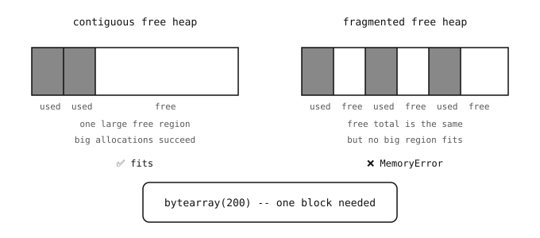

2.40. Pamięć i odśmiecanie¶
MicroPython zarządza pamięcią tak samo jak CPython: każdy obiekt znajduje się na stercie, a odśmiecacz (garbage collector, GC) zwalnia obiekty, do których nic już się nie odwołuje. Na urządzeniu z kilkuset kilobajtami RAM zwracanie uwagi na sposób wykorzystania sterty bywa okazjonalnie konieczne; w Pythonie na komputerze stacjonarnym rzadko kiedy.
2.40.1. Sterta¶
Sterta to obszar RAM – w większości kamer OpenMV w rzeczywistości rozdzielony na więcej niż jedną fizyczną pulę pamięci – który środowisko uruchomieniowe przydziela obiektom Pythona. Za każdym razem, gdy wyrażenie Pythona tworzy nowy obiekt (listę, napis, słownik, krotkę, cokolwiek, co nie jest małą liczbą całkowitą ani singletonem), blok bajtów pobierany jest ze sterty, aby go przechować. Gdy GC zauważy, że obiekt jest nieosiągalny, zwraca blok do puli wolnej pamięci, z której pochodził.
Warto znać dwie funkcje z modułu gc:
gc.mem_free()– przybliżona liczba wolnych bajtów na stercie w danej chwili.gc.collect()– natychmiast uruchamia cykl odśmiecania, zamiast czekać, aż środowisko uruchomieniowe samo go wywoła.
import gc
print("before:", gc.mem_free())
big = [0] * 10000
print("after :", gc.mem_free())
del big
gc.collect()
print("freed :", gc.mem_free())
Dokładne liczby zależą od konkretnej wersji; znaczenie ma kierunek zmiany: alokowanie dużych obiektów zmniejsza mem_free, a porzucenie odwołań wraz z gc.collect oddaje stertę.
2.40.2. Fragmentacja¶
Pula wolnej pamięci nie jest w magiczny sposób ciągła. W miarę jak obiekty pojawiają się i znikają z różnymi czasami życia, wolna przestrzeń rozpada się na coraz mniejsze fragmenty, nawet gdy jej łączny rozmiar jest wciąż duży. Alokacja obiektu większego niż największy pojedynczy wolny fragment kończy się błędem MemoryError – mimo że technicznie wolnego RAM-u jest łącznie wystarczająco dużo.

Ten sam łączny wolny RAM może pomieścić duży bufor (po lewej) lub odmówić jego pomieszczenia (po prawej) w zależności od stopnia fragmentacji.¶
Fragmentacja jest głównie problemem w długo działających skryptach, które wciąż alokują i zwalniają bufory o różnych rozmiarach. Pojedynczym najskuteczniejszym środkiem zaradczym jest wstępna alokacja długo żyjących buforów blisko początku programu, zanim wiele krótkotrwałych alokacji zdąży je rozproszyć.
2.40.3. Wstępna alokacja¶
Dwa wzorce sprawiają, że sterta zachowuje się dobrze:
Zaalokuj bufory o stałym rozmiarze raz i wykorzystuj je ponownie, zamiast budować nową listę lub
bytearrayw każdej iteracji.Wyciągnij stałe i tablice odwołań poza wewnętrzne pętle, aby były tworzone tylko raz.
buf = bytearray(64) # one allocation, reused below
def fill(value):
for i in range(len(buf)):
buf[i] = value
fill(0)
fill(255)
Porównaj z wersją tworzącą nowy bytearray wewnątrz pętli: każda iteracja produkuje śmieci, które GC musi później posprzątać. Wersja z wstępną alokacją nie tworzy żadnych śmieci.
2.40.4. Kiedy wywoływać gc.collect¶
gc.collect() jest zwykle automatyczne – środowisko uruchomieniowe wywołuje je, gdy alokacje nie mogą znaleźć wystarczającej ilości wolnej pamięci. Ręczne wywołanie bywa użyteczne w dwóch sytuacjach:
Tuż po wyjściu dużej partii obiektów poza zakres, aby zwolnić je natychmiast, zamiast czekać, aż kolejna alokacja poniesie ten koszt.
Tuż przed sekcją, która wymaga znanej maksymalnej ilości wolnej pamięci, aby uniknąć uruchomienia GC w trakcie operacji wrażliwej na czas.
Rozsiewanie wywołań gc.collect wszędzie nie przyspiesza programu – samo odśmiecanie zajmuje czas. Stosuj je rozważnie, w miejscach, gdzie koszt nieplanowanego odśmiecania byłby gorszy niż koszt tego uruchomionego celowo.